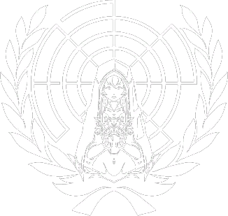

Great Army: "The Grand Army was formed under the guise that it was an organization for mankind to defend themselves with mankind's own hands. In reality, it is not. It was formed as an organization to protect the Machine Angels. Because they couldn't stand the sight of the Machine Angels being torn to pieces fighting for humanity day after day." Due to being connected to the network, after the creation of the sleeping god, their free will was taken away and they became puppets. After the end of The Citadel they join the Millenarianism as puppets that lack free will.
UN: United Nations then turned into a religious faction "a religious organization whose ultimate goal is the survival of the human race and whose origins can be traced back to before the 'Starry Night'." Its sub factions are, U.N.S., U.N.E.F., U.N.E.S.C.O.

United Nations Salvation(U.N.S.): In charge of the evacuation shelters. And possibly the Warships.
United Nations Emergency Force(U.N.E.F.): "For a long time, the 3rd U.N .Emergency Force was the only military organisation on Earth until the formation of the Grand Army. .Its main force consisted of the Machine Angels and Angel ships armed with cybernetics. ..That Edelweiss is one of the few remaining equipments." Humans would use the Xeta rifle and exoskeletons.
United Nations Educational, Scientific and Cultural Organization(U.N.E.S.C.O.): In charge of preserving cultural heritage and Advancing scientific collaborations.
Millenarianism: Army that serves the 7 Trumpeters who seek to bring back God. They "destroyed all traces of human science and culture in the Iron Age." After the events of the first game the Great Army, puppets that roam that planet join them as their sentinels
The Organa: "They are martyrs for a noble cause that can only be achieved in the flesh. You know how hard to survive on this damned place in the flesh." They have little to no cybernetics. A resistance composed of members of The Citadel, they fight against the 7 trumpeters and are the guardians of the tombstones of the Seven Great Angels.